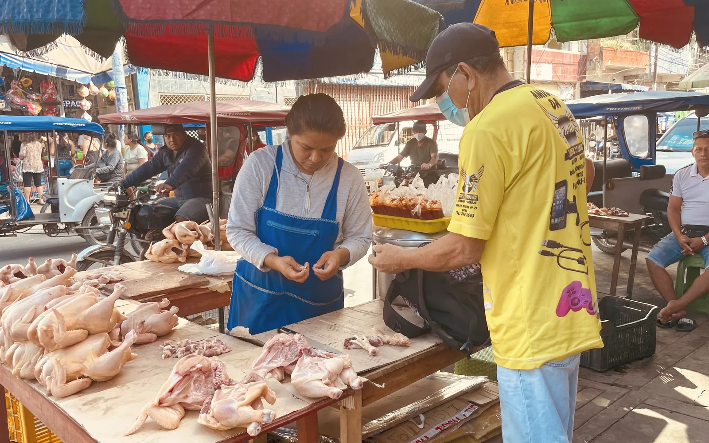

Childhood infection
Comparing diarrhoeal disease, asymptomatic carriage and persistent detection during early life.
Project 02-C
Population genomics, antimicrobial resistance, source attribution and childhood infection in and around Iquitos.
Peru programme
Research in the Peruvian Amazon connects longitudinal childhood epidemiology with bacterial population genomics. The programme examines symptomatic infection and asymptomatic carriage, the emergence of antimicrobial-resistant lineages, and the relationship between human and poultry-associated populations.
Work in Iquitos has provided an unusually rich setting for studying Campylobacter jejuni and Campylobacter coli across clinical, ecological and evolutionary scales.

Research questions
Comparing diarrhoeal disease, asymptomatic carriage and persistent detection during early life.
Reconstructing the emergence and expansion of locally important C. jejuni and C. coli lineages.
Connecting resistance phenotypes and determinants to lineage, recombination and ecological change.
Using local poultry and livestock genomes to interpret the likely origins of human infection.
Current genomic story
Current work focuses on a multidrug-resistant C. coli lineage associated with childhood diarrhoea and poultry-linked ecology. Population structure, phylodynamics, resistance and accessory-genome analyses are being combined to understand when the lineage emerged and why it expanded.
Related work examines interspecies exchange of cmeRABC alleles, extended antimicrobial phenotypes and the wider value of locally contextualised source-attribution models.
Programme value
Local source genomes improve attribution and expose uncertainty that global reference collections can conceal.
Repeated childhood sampling links bacterial populations to persistence, carriage and growth outcomes.
Archived collections make it possible to reconstruct lineage emergence across decades of ecological change.